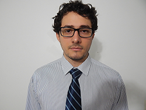

Sobre

Meu nome é Rafael Thofehrn Castro. Moro em Curitiba, Brasil, e recentemente me formei em Ciência da Computação pela Universidade Federal do Paraná.
Em 2012 tive a oportunidade de participar de um programa de intercâmbio, onde viajei para Vancouver, Canadá, para cursar materias relacionadas a Ciência da
Computação na Universidade da Columbia Britânica. Este intercámbio durou dezoito meses e, no final, participei de um programa onde desenvolvi uma
aplicação que ajudou um grupo de alunos de doutorado com suas teses. A aplicação foi utilizada na conferência Siggraph 2013, onde eles apresentaram seu projeto.
Educação
Qualificação Acadêmica
-
Universidade Federal do ParanáCuritiba, BrasilCiência da Computação - Graduação2010-2015
-
Universidade da Columbia BritânicaVancouver, CanadáCiência da Computação - Graduação Sanduíche2012-2013
Projetos Notáveis
-
Trabalho de conclusão de curso: Ferramenta de Manipulação de Diferentes Tecnologias de Bancos de Dados RelacionaisDesenvolvimento de uma ferramenta WEB capaz de manipular bases de diferentes tecnologias de bancos de dados, oferecendo funcionalidades como visualização de estruturas, geração de estatísticas, comparação e migração de estruturas e dados.Experiência Profissional
-
Empresa: Planning Service Transfer PricingCuritiba, BrasilDesenvolvedorFevereiro de 2014 - Maio de 2015Responsável pelo desenvolvimento de aplicações Desktop e Web em C# para auxiliar nas atividades da empresa.Iniciação CientíficaVancouver, CanadáColaboradorMaio de 2013 - Agosto de 2013Responsável pelo desenvolvimento de uma aplicação em C# para integrar todos os componentes da pesquisa "Low-Budget Transient Imaging Using Photonic Mixer Devices". A aplicação inicia a captura de imagens com uma câmera, faz processamento em cima destas imagens e apresenta o resultado. A pesquisa, auxiliada pela aplicação desenvolvida, foi apresentada no evento Siggraph 2013, que aconteceu em Anaheim, Califórnia, Estados Unidos da América.Programa de Educação TutorialCuritiba, BrasilBolsistaMarço de 2010 - Julho de 2012Realização de atividades em parceria com o curso de Ciência da Computação Universidade Federal do Paraná. Dentre as atividades, destaca-se a realização de curso Linux para novos alunos e organização do estande do curso na Feira de Cursos e Profissões da universidade.CompetênciasLínguas
-
Inglês AvançadoCertificate in English Language - Advanced LevelEnglish Language Institute - The University of British ColumbiaHabilidades Técnicas
-
Linguagens de Programação
-
Avançado: C, C++, C# e Javascript
-
Intermediário: Java, Assembly, Shell Script, VHDL, Pascal, Prolog e Haskell
-
Básico: Python
-
-
Habilidades em Computação:
-
Desenvolvimento WEB: ASP.NET
-
Desenvolvimento Desktop: Windows Forms e WPF
-
Bancos de Dados: Oracle, MySQL, PostgreSQL and Firebird
-
Outras Tecnologias: Unity
-
Eventos-
Siggraph 2013Anaheim, Estados Unidos da AméricaColaboradorJulho de 2013Estande: "Low-Budget Transient Imaging Using Photonic Mixer Devices".SIEPE 2011Curitiba, BrasilApresentação de TrabalhoOutubro de 2011Trabalho: "Software Gerenciador de Eventos Acadêmicos".SIEPE 2010Curitiba, BrasilApresentação de TrabalhoOutubro de 2010Trabalhos: "Um estudo sobre Redes Tolerantes a Atrasos e Desconexões e "Atividades lúdicas como estratégia para Feira de Cursos e Profissões".
-
-